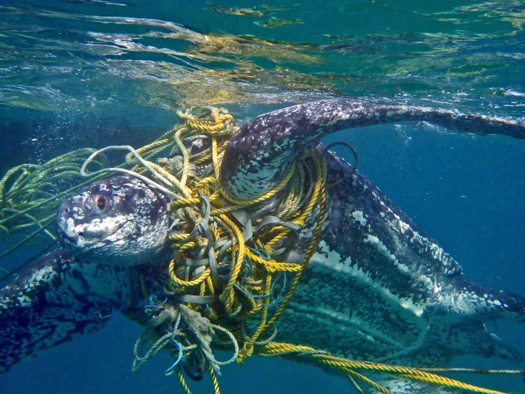
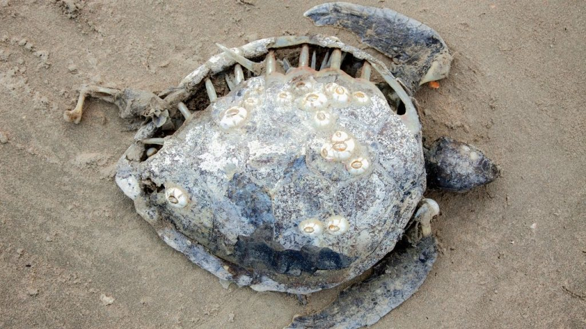
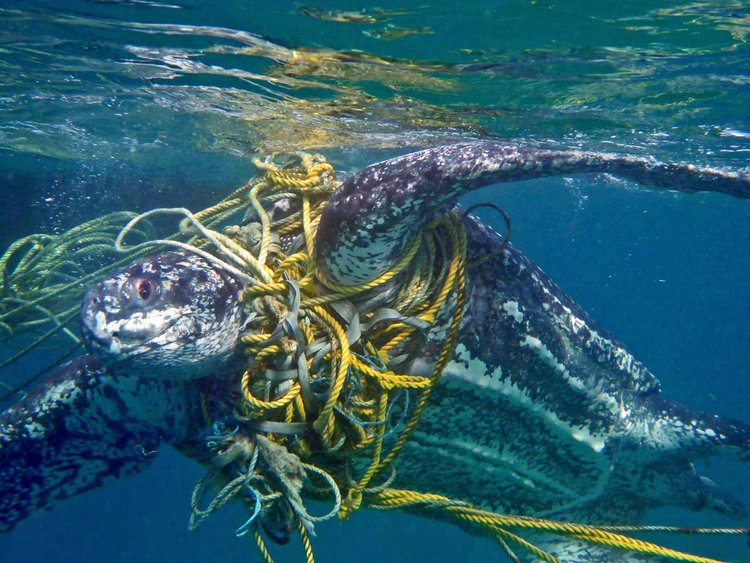
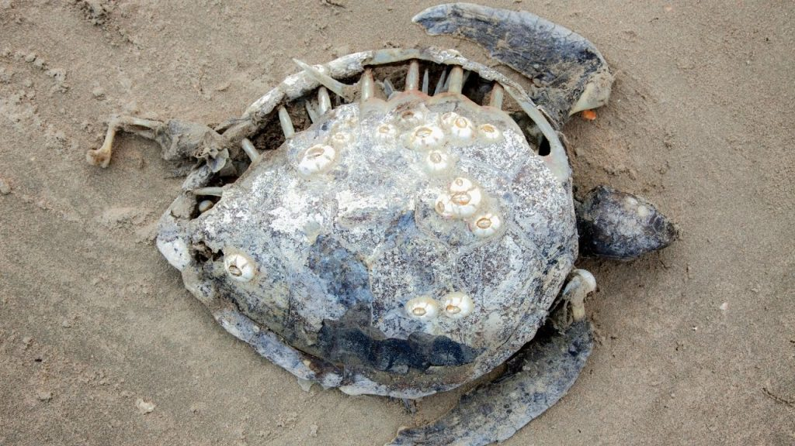

Why Are Sea Turtles Endangered? five Major Threats
1.FISHERIES BYCATCH
It’s estimated that the fishing industry contributes to the death of thousands to tens of thousands of sea turtles each year. Turtles that become trapped in longlines, gill nets and trawls are thrown away as bycatch. And those that manage to avoid fishing nets are impacted by the disruption to their food supply and habitat.
2.COASTAL DEVELOPMENT
Every year, sea turtle habitats are destroyed because of shrinking coastlines. Wherever there is boat vessel traffic, whenever a new hotel or high-rise is built up along the shore, and wherever there is sea floor dredging and beach erosion sea turtle food supplies and nesting areas take a major hit.
3.POLLUTION AND PATHOGENS
Marine pollution can harm sea turtles in many ways. Plastic pollution, discarded fishing gear, petroleum by-products, and other debris injure sea turtles through ingestion and entanglement. Ocean pollution can also weaken the turtles’ immune systems, and disrupt nesting behavior and hatchling orientation.
4.DIRECT TAKE
Throughout the world, turtles are killed and traded on the global market as exotic food, oil, leather, and jewelry. Over the past 100 years, millions of hawkbill turtles alone have been killed just for the price of their shells. And even though today the global trade of luxury and craft items has reduced thanks to conservation efforts, it still remains an ongoing threat to turtles in parts of Africa, Asia and the Americas.
5.CLIMATE CHANGE
We are just now learning the extent to which climate change can affect sea turtles. Climate change can impact the natural sex ratios of hatchlings, increase the likelihood of disease outbreaks, and can escalate the frequency of extreme weather events, which destroy nesting beaches and coral reefs.
 


